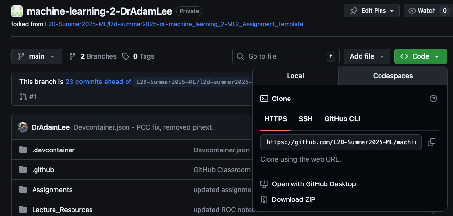

Learning Objectives
Introduction
Git is a version control system that tracks changes in your files over time, creating a detailed history of every modification you make to your project. Whilst Git can work with anything text-based, it works especially well for coding projects where there are continuous updates to varying parts, typically non-linear.
Git is a distributed system, meaning that every copy of a Git repository contains the complete history of all the files. This means every contributor has a full backup of the entire project history, decreasing the likelihood of losing your code and making collaboration easier.
A repository (often shortened to repo) is the Git name for the folder containing your whole project. In this folder there will be a .git/ folder that contains all the metadata to track and configure your project/repository.
This course has been setup to use Github CodeSpaces (see section Course setup). This doesn't require you to install Git yourself, but you will have to use some of GitHubs features.
Git vs GitHub
This distinction often confuses beginners:
- Git is the tool—the version control software that runs on your computer and tracks changes
- GitHub is a hosting service—a website that stores your Git repositories online, making them accessible from anywhere and enabling collaboration
GitHub is the go-to service for storing and collaborating on code, used throughout business and academia. We will explore it further in the next section.
Why Scientists Need Git
Git and GitHub address many critical needs of researchers:
- Backup: Your work is automatically backed up across multiple locations
- Collaboration: Multiple researchers can work on the same codebase without overwriting each other's work
- Centralisation: All your lab's code can be stored in one place. When people leave you can be sure you will still have access to their work, and likewise you can point new members to it for easy access
- Publishing: Many journals now require code availability, and Git repositories provide a professional way to share your work
If you and your lab are beginning to use more code, we recommend you create a lab organisation at GitHub, using this space to share and save your labs work.
Installing Git
With GitHub CodeSpaces, Git is already installed in the web-based VSCode, allowing you to push back your changes to your lesson repository. If you would just like to work this way then you can ignore this section.
However, if you want to install it on your local computer then visit git-scm.com and download the appropriate version for your operating system. The website will automatically detect your OS and suggest the correct download, which will walk you through installation.
Verification
After installation, open your terminal or command prompt and type:
git --version
>> git version 2.50.0You should see output showing the Git version number (as shown above), confirming the installation was successful.
Initial Configuration
Before using Git, you'll need to set up your identity:
git config --global user.name "Your Name"
git config --global user.email "your.email@example.com"Use the same email from your GitHub account.
Basics
The Git workflow follows a common pattern that you'll use repeatedly.
1. Cloning
Cloning is the process of downloading a complete copy of a Git repository from a remote location (like GitHub) to your local computer. This creates an identical copy of the project, including all files, folders, and the entire version history (the metadata).
All git commands are entered in the terminal and work in place, i.e., they will clone or look for information in the folder you are currently in.
The standard clone command is:
git clone https://github.com/user/repository-name.gitThe web link or SSH link (see Course setup) can be found on the repository's GitHub page, just click the green Code box for the dropdown:

When you run the clone command, as well as downloading the files it will set up a connection to the remote repository called "origin" and configure the local repository to track changes.
Once cloning is complete, you'll need to navigate into the newly created folder:
cd repository-nameYou're now inside your local copy of the repository and can begin working with the files.
2. Pull
When working with remotely stored files, it's good practice to keep your local copy up to date with the centralised copy. We do this with the git pull command, which downloads the latest changes from the remote repository and incorporates them into your local copy.
The standard pull command is:
git pullYou will find yourself using pull every time you start work, to make sure you are up to date with any possible changes. It's a good habit to get into. If you have any changes in your local version of the folder, Git will attempt to merge the two, unless there are conflicts (both you and the remote have changes to the same line of code).
3. Add
When we are happy with our changes to the code or just at the end of a working session, we will want to update the remote repository with the new code. For this we use the git add command to stage files for commit, which means you're preparing specific changes to be saved to your project. Git has a two-step process: first you stage changes with add, then you save them with commit.
To stage all changes in your current directory, you add a . after add:
git add .To stage a specific folder or file you add it explicitly:
git add your_file.pyThis separation allows you to create focused commits where you have made several changes at once, but for differing reasons.
4. Commit Message
Every staged change, ready to be sent to the remote repository, must be accompanied by a commit message. This should be a description of what the changes were for and becomes part of the permanent record. Try not to be vague as you may regret this when something goes wrong.
The basic commit command with a message:
git commit -m "Your descriptive message"5. Push
Now that the changes are staged and properly described, we can push them back to the remote repository. To do this, we use the git push command.
The standard push command:
git pushThe flow of
add, commit, and push are typically done at the same time, sequentially. You should find yourself doing this when:- Completing a logical unit of work
- At the end of working sessions
- Before switching computers
Common Errors
Authentication Issues
As mentioned, Git is now often connected to a remote online web service, GitHub. To do so you must authenticate your Git with your GitHub account. Head to section the next section on how to setup a secure connection to your account.
Merge Conflicts
Merge conflicts occur when the same lines in a file have been changed differently in your local copy and the remote repository. Git cannot automatically determine which version to keep. This error can sometimes occur when you will push back your completed assignments from codespaces. The next section will contain a quick fix to this.